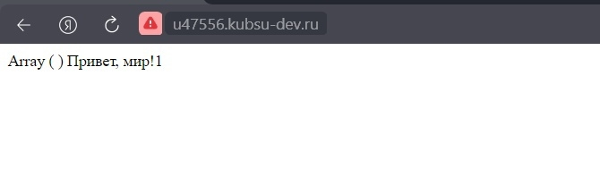

Загрузил файлы задания на сервер и сделал их доступным для чтения.
Получение информации методом GET. В версии 1.0 после обработки одного запроса соединение закрывается.
В версии 1.1 сервер по умолчанию не разрывает соединение, поэтому клиент может посылать другие запросы.Host может осуществлять обратное разрешение доменных имен, то есть, получать список доменных имен, связанных с заданным IP-адресом, используется главным образом для диагностики серверов доменных имен.
В Content-Length записано число, обозначающее точную длину байта тела HTTP. Оно равно 11335
Медиа тип (так же известный как Internet Mail Extensions или MIME тип) является стандартом,который описывает природу и формат документа, файла или набора байтов. Аналогично предыдущему скриншоту, обращаюсь к файлу image.png. В данном случае нас интересует медиатип, смотрим на строчку Content-Type. Медиатип ресурса: image/png
HTTP-метод POST предназначен для отправки данных на сервер. Тип тела запроса указывается в заголовке Content-Type. Запрос POST обычно отправляется через форму HTML и приводит к изменению на сервере. Веб-браузер отправляет POST-запрос с элементами веб-формы, по умолчанию интернет-тип данных медиа — application/x-www-form-urlencoded. В таком случае, значения кодируются в кортежах с ключом, разделённых символом '&', с '=' между ключом и значением. Пример с двумя значениями: say=Hi&to=Mom

Заголовок запроса Range указывает серверу какую часть документа ему необходимо вернуть. Синтаксис Range: <единица>=<начало-диапазона>-<конец-диапазона>
Использую метод HEAD. В данном случае нас интересует кодировка, смотрим на строчку Content-Type, кодировка ресурса index.php:UTF-8.